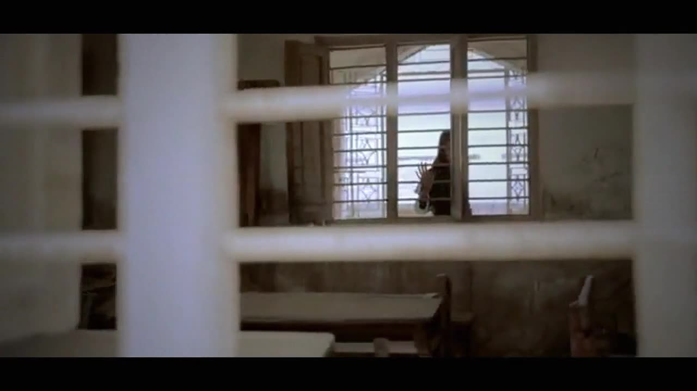

The narration · کہانی
ایک لڑکی، ایک صبح، اور ایک فیصلہ
One girl, one morning, one decision — the written narration, line by line, with the English beneath.

Short documentary · Pakistan · 1:55
پردہ
A short-documentary series on girls' fight for school
Girls in Pakistan say what school would have meant to them — the one told to marry instead, the one who has cleaned houses for a year, the one learning to write. Spoken in Urdu, subtitled in English.
The film · 1:55
آواز آن کریں
Voices · آوازیں
Every girl has a story. These are the words spoken on screen — select any line to play that moment of the film.
The closing frame
Every girl has a story.
Not every girl is free to tell hers.
The narration · کہانی
One girl, one morning, one decision — the written narration, line by line, with the English beneath.
Why it matters
تعلیم احسان نہیں، حق ہے۔
Education is not a favour. It is a right.
What helps
Footage
This cut is edited from six source films on girls' education.